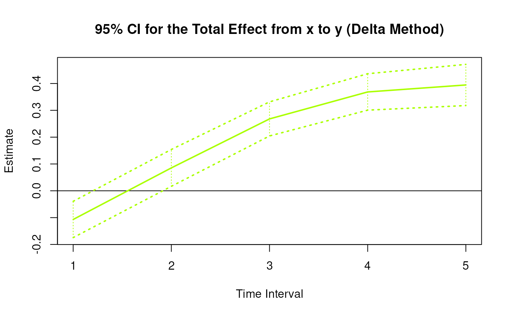
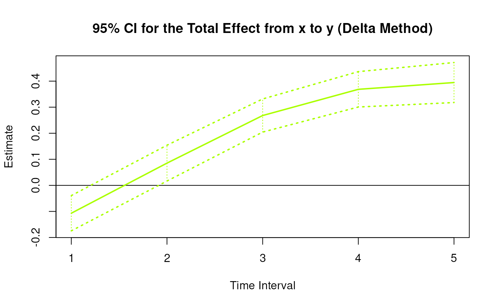
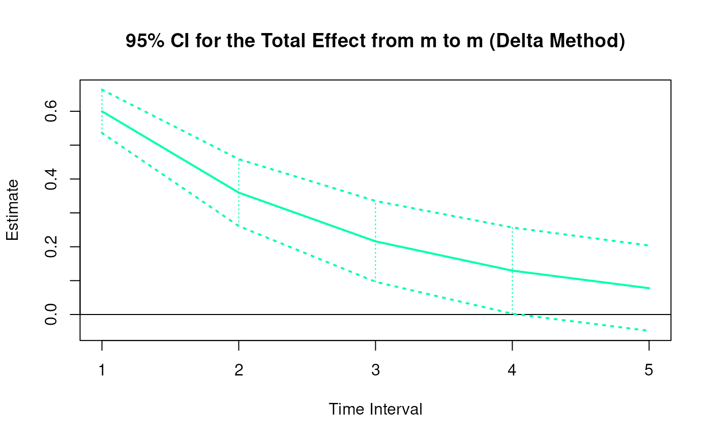
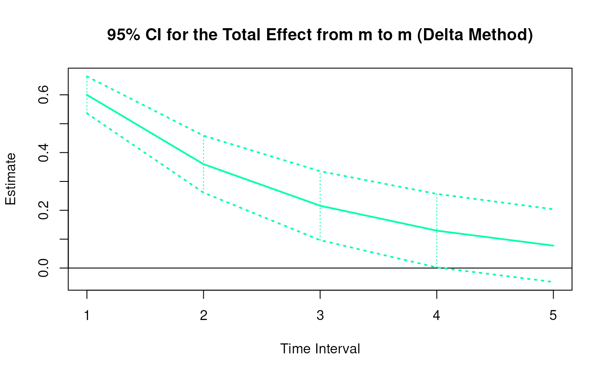
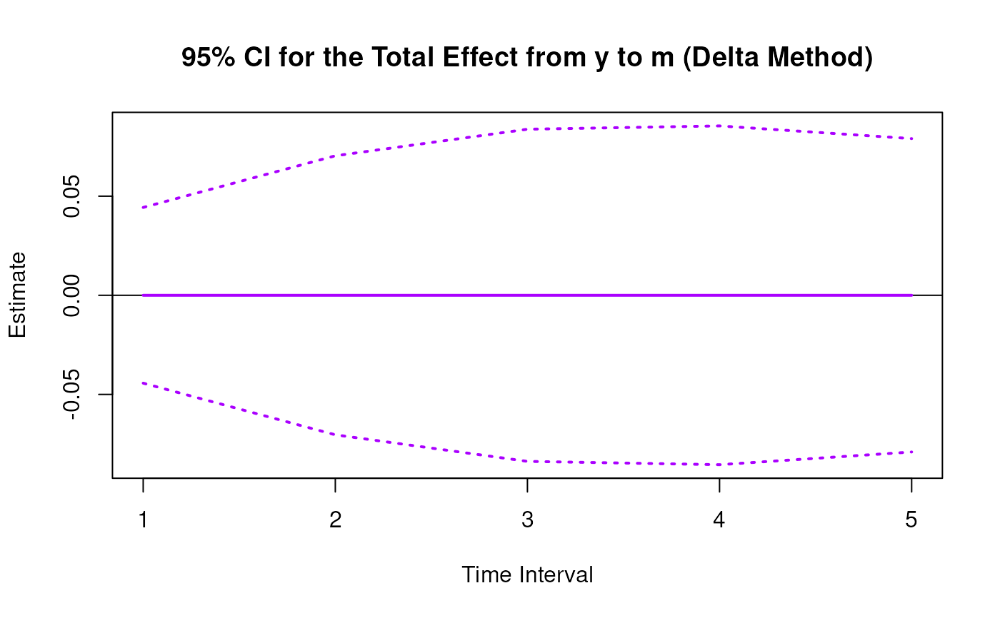
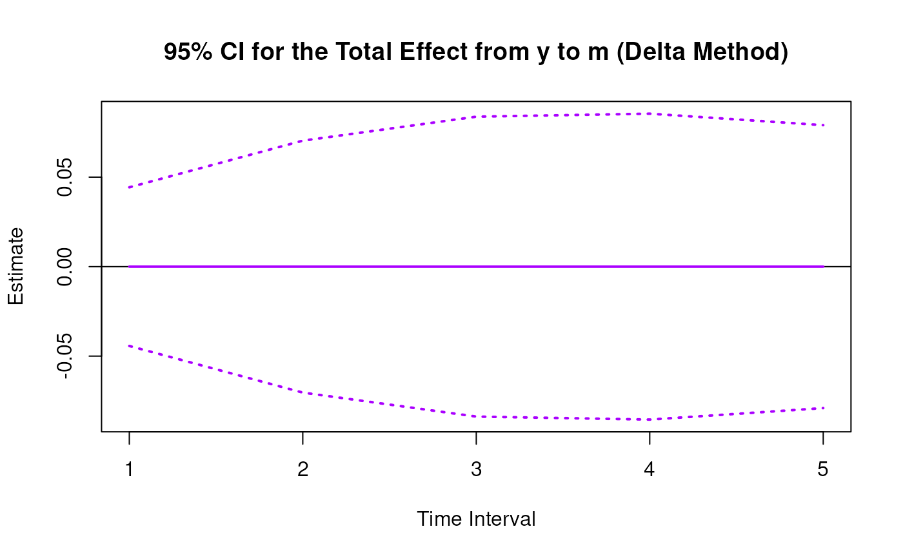

Delta Method Sampling Variance-Covariance Matrix for the Elements of the Standardized Matrix of Lagged Coefficients Over a Specific Time Interval or a Range of Time Intervals
Source:R/cTMed-delta-beta-std.R
DeltaBetaStd.RdThis function computes the delta method sampling variance-covariance matrix for the elements of the standardized matrix of lagged coefficients \(\boldsymbol{\beta}\) over a specific time interval \(\Delta t\) or a range of time intervals using the first-order stochastic differential equation model's drift matrix \(\boldsymbol{\Phi}\) and process noise covariance matrix \(\boldsymbol{\Sigma}\).
Arguments
- phi
Numeric matrix. The drift matrix (\(\boldsymbol{\Phi}\)).
phishould have row and column names pertaining to the variables in the system.- sigma
Numeric matrix. The process noise covariance matrix (\(\boldsymbol{\Sigma}\)).
- vcov_theta
Numeric matrix. The sampling variance-covariance matrix of \(\mathrm{vec} \left( \boldsymbol{\Phi} \right)\) and \(\mathrm{vech} \left( \boldsymbol{\Sigma} \right)\)
- delta_t
Numeric. Time interval (\(\Delta t\)).
- ncores
Positive integer. Number of cores to use. If
ncores = NULL, use a single core. Consider using multiple cores when number of replicationsRis a large value.- tol
Numeric. Smallest possible time interval to allow.
Value
Returns an object
of class ctmeddelta which is a list with the following elements:
- call
Function call.
- args
Function arguments.
- fun
Function used ("DeltaBetaStd").
- output
A list the length of which is equal to the length of
delta_t.
Each element in the output list has the following elements:
- delta_t
Time interval.
- jacobian
Jacobian matrix.
- est
Estimated elements of the standardized matrix of lagged coefficients.
- vcov
Sampling variance-covariance matrix of estimated elements of the standardized matrix of lagged coefficients.
Details
See TotalStd().
Delta Method
Let \(\boldsymbol{\theta}\) be a vector that combines \(\mathrm{vec} \left( \boldsymbol{\Phi} \right)\), that is, the elements of the \(\boldsymbol{\Phi}\) matrix in vector form sorted column-wise and \(\mathrm{vech} \left( \boldsymbol{\Sigma} \right)\), that is, the unique elements of the \(\boldsymbol{\Sigma}\) matrix in vector form sorted column-wise. Let \(\hat{\boldsymbol{\theta}}\) be a vector that combines \(\mathrm{vec} \left( \hat{\boldsymbol{\Phi}} \right)\) and \(\mathrm{vech} \left( \hat{\boldsymbol{\Sigma}} \right)\). By the multivariate central limit theory, the function \(\mathbf{g}\) using \(\hat{\boldsymbol{\theta}}\) as input can be expressed as:
$$ \sqrt{n} \left( \mathbf{g} \left( \hat{\boldsymbol{\theta}} \right) - \mathbf{g} \left( \boldsymbol{\theta} \right) \right) \xrightarrow[]{ \mathrm{D} } \mathcal{N} \left( 0, \mathbf{J} \boldsymbol{\Gamma} \mathbf{J}^{\prime} \right) $$
where \(\mathbf{J}\) is the matrix of first-order derivatives of the function \(\mathbf{g}\) with respect to the elements of \(\boldsymbol{\theta}\) and \(\boldsymbol{\Gamma}\) is the asymptotic variance-covariance matrix of \(\hat{\boldsymbol{\theta}}\).
From the former, we can derive the distribution of \(\mathbf{g} \left( \hat{\boldsymbol{\theta}} \right)\) as follows:
$$ \mathbf{g} \left( \hat{\boldsymbol{\theta}} \right) \approx \mathcal{N} \left( \mathbf{g} \left( \boldsymbol{\theta} \right) , n^{-1} \mathbf{J} \boldsymbol{\Gamma} \mathbf{J}^{\prime} \right) $$
The uncertainty associated with the estimator \(\mathbf{g} \left( \hat{\boldsymbol{\theta}} \right)\) is, therefore, given by \(n^{-1} \mathbf{J} \boldsymbol{\Gamma} \mathbf{J}^{\prime}\) . When \(\boldsymbol{\Gamma}\) is unknown, by substitution, we can use the estimated sampling variance-covariance matrix of \(\hat{\boldsymbol{\theta}}\), that is, \(\hat{\mathbb{V}} \left( \hat{\boldsymbol{\theta}} \right)\) for \(n^{-1} \boldsymbol{\Gamma}\). Therefore, the sampling variance-covariance matrix of \(\mathbf{g} \left( \hat{\boldsymbol{\theta}} \right)\) is given by
$$ \mathbf{g} \left( \hat{\boldsymbol{\theta}} \right) \approx \mathcal{N} \left( \mathbf{g} \left( \boldsymbol{\theta} \right) , \mathbf{J} \hat{\mathbb{V}} \left( \hat{\boldsymbol{\theta}} \right) \mathbf{J}^{\prime} \right) . $$
References
Bollen, K. A. (1987). Total, direct, and indirect effects in structural equation models. Sociological Methodology, 17, 37. doi:10.2307/271028
Deboeck, P. R., & Preacher, K. J. (2015). No need to be discrete: A method for continuous time mediation analysis. Structural Equation Modeling: A Multidisciplinary Journal, 23 (1), 61–75. doi:10.1080/10705511.2014.973960
Ryan, O., & Hamaker, E. L. (2021). Time to intervene: A continuous-time approach to network analysis and centrality. Psychometrika, 87 (1), 214–252. doi:10.1007/s11336-021-09767-0
See also
Other Continuous Time Mediation Functions:
BootBeta(),
BootBetaStd(),
BootMed(),
BootMedStd(),
DeltaBeta(),
DeltaIndirectCentral(),
DeltaMed(),
DeltaMedStd(),
DeltaTotalCentral(),
Direct(),
DirectStd(),
ExpCov(),
ExpMean(),
Indirect(),
IndirectCentral(),
IndirectStd(),
MCBeta(),
MCBetaStd(),
MCIndirectCentral(),
MCMed(),
MCMedStd(),
MCPhi(),
MCTotalCentral(),
Med(),
MedStd(),
PosteriorBeta(),
PosteriorIndirectCentral(),
PosteriorMed(),
PosteriorTotalCentral(),
Total(),
TotalCentral(),
TotalStd(),
Trajectory()
Examples
phi <- matrix(
data = c(
-0.357, 0.771, -0.450,
0.0, -0.511, 0.729,
0, 0, -0.693
),
nrow = 3
)
colnames(phi) <- rownames(phi) <- c("x", "m", "y")
sigma <- matrix(
data = c(
0.24455556, 0.02201587, -0.05004762,
0.02201587, 0.07067800, 0.01539456,
-0.05004762, 0.01539456, 0.07553061
),
nrow = 3
)
vcov_theta <- matrix(
data = c(
0.00843, 0.00040, -0.00151, -0.00600, -0.00033,
0.00110, 0.00324, 0.00020, -0.00061, -0.00115,
0.00011, 0.00015, 0.00001, -0.00002, -0.00001,
0.00040, 0.00374, 0.00016, -0.00022, -0.00273,
-0.00016, 0.00009, 0.00150, 0.00012, -0.00010,
-0.00026, 0.00002, 0.00012, 0.00004, -0.00001,
-0.00151, 0.00016, 0.00389, 0.00103, -0.00007,
-0.00283, -0.00050, 0.00000, 0.00156, 0.00021,
-0.00005, -0.00031, 0.00001, 0.00007, 0.00006,
-0.00600, -0.00022, 0.00103, 0.00644, 0.00031,
-0.00119, -0.00374, -0.00021, 0.00070, 0.00064,
-0.00015, -0.00005, 0.00000, 0.00003, -0.00001,
-0.00033, -0.00273, -0.00007, 0.00031, 0.00287,
0.00013, -0.00014, -0.00170, -0.00012, 0.00006,
0.00014, -0.00001, -0.00015, 0.00000, 0.00001,
0.00110, -0.00016, -0.00283, -0.00119, 0.00013,
0.00297, 0.00063, -0.00004, -0.00177, -0.00013,
0.00005, 0.00017, -0.00002, -0.00008, 0.00001,
0.00324, 0.00009, -0.00050, -0.00374, -0.00014,
0.00063, 0.00495, 0.00024, -0.00093, -0.00020,
0.00006, -0.00010, 0.00000, -0.00001, 0.00004,
0.00020, 0.00150, 0.00000, -0.00021, -0.00170,
-0.00004, 0.00024, 0.00214, 0.00012, -0.00002,
-0.00004, 0.00000, 0.00006, -0.00005, -0.00001,
-0.00061, 0.00012, 0.00156, 0.00070, -0.00012,
-0.00177, -0.00093, 0.00012, 0.00223, 0.00004,
-0.00002, -0.00003, 0.00001, 0.00003, -0.00013,
-0.00115, -0.00010, 0.00021, 0.00064, 0.00006,
-0.00013, -0.00020, -0.00002, 0.00004, 0.00057,
0.00001, -0.00009, 0.00000, 0.00000, 0.00001,
0.00011, -0.00026, -0.00005, -0.00015, 0.00014,
0.00005, 0.00006, -0.00004, -0.00002, 0.00001,
0.00012, 0.00001, 0.00000, -0.00002, 0.00000,
0.00015, 0.00002, -0.00031, -0.00005, -0.00001,
0.00017, -0.00010, 0.00000, -0.00003, -0.00009,
0.00001, 0.00014, 0.00000, 0.00000, -0.00005,
0.00001, 0.00012, 0.00001, 0.00000, -0.00015,
-0.00002, 0.00000, 0.00006, 0.00001, 0.00000,
0.00000, 0.00000, 0.00010, 0.00001, 0.00000,
-0.00002, 0.00004, 0.00007, 0.00003, 0.00000,
-0.00008, -0.00001, -0.00005, 0.00003, 0.00000,
-0.00002, 0.00000, 0.00001, 0.00005, 0.00001,
-0.00001, -0.00001, 0.00006, -0.00001, 0.00001,
0.00001, 0.00004, -0.00001, -0.00013, 0.00001,
0.00000, -0.00005, 0.00000, 0.00001, 0.00012
),
nrow = 15
)
# Specific time interval ----------------------------------------------------
DeltaBetaStd(
phi = phi,
sigma = sigma,
vcov_theta = vcov_theta,
delta_t = 1
)
#>
#> Elements of the matrix of lagged coefficients
#>
#> $`1`
#> interval est se z p 2.5% 97.5%
#> from x to x 1 0.6998 0.0471 14.8688 0.000 0.6075 0.7920
#> from x to m 1 0.6431 0.0626 10.2685 0.000 0.5203 0.7658
#> from x to y 1 -0.0936 0.0284 -3.2966 0.001 -0.1493 -0.0380
#> from m to x 1 0.0000 0.0338 0.0000 1.000 -0.0662 0.0662
#> from m to m 1 0.5999 0.0326 18.3826 0.000 0.5359 0.6639
#> from m to y 1 0.2910 0.0313 9.2991 0.000 0.2296 0.3523
#> from y to x 1 0.0000 0.0447 0.0000 1.000 -0.0876 0.0876
#> from y to m 1 0.0000 0.0427 0.0000 1.000 -0.0837 0.0837
#> from y to y 1 0.5001 0.0274 18.2776 0.000 0.4464 0.5537
#>
# Range of time intervals ---------------------------------------------------
delta <- DeltaBetaStd(
phi = phi,
sigma = sigma,
vcov_theta = vcov_theta,
delta_t = 1:5
)
plot(delta)

 

 



 # Methods -------------------------------------------------------------------
# DeltaBetaStd has a number of methods including
# print, summary, confint, and plot
print(delta)
#>
#> Elements of the matrix of lagged coefficients
#>
#> $`1`
#> interval est se z p 2.5% 97.5%
#> from x to x 1 0.6998 0.0471 14.8688 0.000 0.6075 0.7920
#> from x to m 1 0.6431 0.0626 10.2685 0.000 0.5203 0.7658
#> from x to y 1 -0.0936 0.0284 -3.2966 0.001 -0.1493 -0.0380
#> from m to x 1 0.0000 0.0338 0.0000 1.000 -0.0662 0.0662
#> from m to m 1 0.5999 0.0326 18.3826 0.000 0.5359 0.6639
#> from m to y 1 0.2910 0.0313 9.2991 0.000 0.2296 0.3523
#> from y to x 1 0.0000 0.0447 0.0000 1.000 -0.0876 0.0876
#> from y to m 1 0.0000 0.0427 0.0000 1.000 -0.0837 0.0837
#> from y to y 1 0.5001 0.0274 18.2776 0.000 0.4464 0.5537
#>
#> $`2`
#> interval est se z p 2.5% 97.5%
#> from x to x 2 0.4897 0.0548 8.9377 0.0000 0.3823 0.5971
#> from x to m 2 0.8358 0.0940 8.8916 0.0000 0.6515 1.0200
#> from x to y 2 0.0748 0.0341 2.1936 0.0283 0.0080 0.1416
#> from m to x 2 0.0000 0.0399 0.0000 1.0000 -0.0782 0.0782
#> from m to m 2 0.3599 0.0504 7.1405 0.0000 0.2611 0.4587
#> from m to y 2 0.3201 0.0365 8.7639 0.0000 0.2485 0.3916
#> from y to x 2 0.0000 0.0536 0.0000 1.0000 -0.1051 0.1051
#> from y to m 2 0.0000 0.0678 0.0000 1.0000 -0.1329 0.1329
#> from y to y 2 0.2501 0.0318 7.8668 0.0000 0.1878 0.3124
#>
#> $`3`
#> interval est se z p 2.5% 97.5%
#> from x to x 3 0.3427 0.0546 6.2779 0e+00 0.2357 0.4496
#> from x to m 3 0.8163 0.1103 7.3985 0e+00 0.6000 1.0325
#> from x to y 3 0.2347 0.0434 5.4129 0e+00 0.1497 0.3197
#> from m to x 3 0.0000 0.0387 0.0000 1e+00 -0.0759 0.0759
#> from m to m 3 0.2159 0.0609 3.5452 4e-04 0.0965 0.3352
#> from m to y 3 0.2648 0.0337 7.8561 0e+00 0.1987 0.3308
#> from y to x 3 0.0000 0.0487 0.0000 1e+00 -0.0954 0.0954
#> from y to m 3 0.0000 0.0807 0.0000 1e+00 -0.1582 0.1582
#> from y to y 3 0.1251 0.0299 4.1799 0e+00 0.0664 0.1837
#>
#> $`4`
#> interval est se z p 2.5% 97.5%
#> from x to x 4 0.2398 0.0536 4.4747 0.0000 0.1348 0.3448
#> from x to m 4 0.7100 0.1166 6.0868 0.0000 0.4814 0.9386
#> from x to y 4 0.3228 0.0526 6.1421 0.0000 0.2198 0.4258
#> from m to x 4 0.0000 0.0355 0.0000 1.0000 -0.0695 0.0695
#> from m to m 4 0.1295 0.0650 1.9937 0.0462 0.0022 0.2568
#> from m to y 4 0.1952 0.0310 6.3062 0.0000 0.1345 0.2559
#> from y to x 4 0.0000 0.0397 0.0000 1.0000 -0.0777 0.0777
#> from y to m 4 0.0000 0.0823 0.0000 1.0000 -0.1614 0.1614
#> from y to y 4 0.0625 0.0310 2.0161 0.0438 0.0017 0.1233
#>
#> $`5`
#> interval est se z p 2.5% 97.5%
#> from x to x 5 0.1678 0.0527 3.1821 0.0015 0.0644 0.2712
#> from x to m 5 0.5801 0.1172 4.9506 0.0000 0.3505 0.8098
#> from x to y 5 0.3456 0.0578 5.9813 0.0000 0.2323 0.4588
#> from m to x 5 0.0000 0.0312 0.0000 1.0000 -0.0611 0.0611
#> from m to m 5 0.0777 0.0642 1.2092 0.2266 -0.0482 0.2036
#> from m to y 5 0.1353 0.0299 4.5185 0.0000 0.0766 0.1940
#> from y to x 5 0.0000 0.0305 0.0000 1.0000 -0.0599 0.0599
#> from y to m 5 0.0000 0.0762 0.0000 1.0000 -0.1493 0.1493
#> from y to y 5 0.0313 0.0341 0.9180 0.3586 -0.0355 0.0980
#>
summary(delta)
#> effect interval est se z p
#> 1 from x to x 1 0.69977250 0.04706304 14.868833 5.252120e-50
#> 2 from x to m 1 0.64305123 0.06262344 10.268540 9.767187e-25
#> 3 from x to y 1 -0.09362266 0.02839956 -3.296624 9.785454e-04
#> 4 from m to x 1 0.00000000 0.03379460 0.000000 1.000000e+00
#> 5 from m to m 1 0.59989538 0.03263394 18.382559 1.812145e-75
#> 6 from m to y 1 0.29097114 0.03129013 9.299134 1.415942e-20
#> 7 from y to x 1 0.00000000 0.04468118 0.000000 1.000000e+00
#> 8 from y to m 1 0.00000000 0.04269308 0.000000 1.000000e+00
#> 9 from y to y 1 0.50007360 0.02735991 18.277603 1.247910e-74
#> 10 from x to x 2 0.48968155 0.05478810 8.937735 3.972267e-19
#> 11 from x to m 2 0.83575303 0.09399392 8.891565 6.025417e-19
#> 12 from x to y 2 0.07477656 0.03408921 2.193555 2.826742e-02
#> 13 from m to x 2 0.00000000 0.03992049 0.000000 1.000000e+00
#> 14 from m to m 2 0.35987447 0.05039929 7.140467 9.301408e-13
#> 15 from m to y 2 0.32005923 0.03652019 8.763899 1.886110e-18
#> 16 from y to x 2 0.00000000 0.05361054 0.000000 1.000000e+00
#> 17 from y to m 2 0.00000000 0.06779969 0.000000 1.000000e+00
#> 18 from y to y 2 0.25007360 0.03178830 7.866843 3.637020e-15
#> 19 from x to x 3 0.34266568 0.05458246 6.277945 3.430781e-10
#> 20 from x to m 3 0.81625470 0.11032736 7.398479 1.377527e-13
#> 21 from x to y 3 0.23472850 0.04336496 5.412861 6.202580e-08
#> 22 from m to x 3 0.00000000 0.03874085 0.000000 1.000000e+00
#> 23 from m to m 3 0.21588703 0.06089478 3.545247 3.922457e-04
#> 24 from m to y 3 0.26476625 0.03370194 7.856114 3.962356e-15
#> 25 from y to x 3 0.00000000 0.04868877 0.000000 1.000000e+00
#> 26 from y to m 3 0.00000000 0.08071268 0.000000 1.000000e+00
#> 27 from y to y 3 0.12505520 0.02991799 4.179933 2.915945e-05
#> 28 from x to x 4 0.23978802 0.05358737 4.474711 7.651461e-06
#> 29 from x to m 4 0.71001902 0.11664887 6.086806 1.151854e-09
#> 30 from x to y 4 0.32280682 0.05255619 6.142127 8.142363e-10
#> 31 from m to x 4 0.00000000 0.03546818 0.000000 1.000000e+00
#> 32 from m to m 4 0.12950963 0.06495896 1.993715 4.618325e-02
#> 33 from m to y 4 0.19521951 0.03095680 6.306191 2.859863e-10
#> 34 from y to x 4 0.00000000 0.03965867 0.000000 1.000000e+00
#> 35 from y to m 4 0.00000000 0.08232584 0.000000 1.000000e+00
#> 36 from y to y 4 0.06253681 0.03101888 2.016088 4.379072e-02
#> 37 from x to x 5 0.16779706 0.05273210 3.182067 1.462281e-03
#> 38 from x to m 5 0.58013311 0.11718525 4.950564 7.399865e-07
#> 39 from x to y 5 0.34557261 0.05777557 5.981293 2.213737e-09
#> 40 from m to x 5 0.00000000 0.03119055 0.000000 1.000000e+00
#> 41 from m to m 5 0.07769223 0.06424869 1.209242 2.265698e-01
#> 42 from m to y 5 0.13530769 0.02994511 4.518524 6.227219e-06
#> 43 from y to x 5 0.00000000 0.03054627 0.000000 1.000000e+00
#> 44 from y to m 5 0.00000000 0.07615080 0.000000 1.000000e+00
#> 45 from y to y 5 0.03127301 0.03406623 0.918006 3.586157e-01
#> 2.5% 97.5%
#> 1 0.607530630 0.79201437
#> 2 0.520311552 0.76579091
#> 3 -0.149284778 -0.03796055
#> 4 -0.066236197 0.06623620
#> 5 0.535934031 0.66385674
#> 6 0.229643605 0.35229867
#> 7 -0.087573505 0.08757350
#> 8 -0.083676896 0.08367690
#> 9 0.446449155 0.55369804
#> 10 0.382298845 0.59706425
#> 11 0.651528335 1.01997772
#> 12 0.007962932 0.14159019
#> 13 -0.078242730 0.07824273
#> 14 0.261093683 0.45865526
#> 15 0.248480975 0.39163748
#> 16 -0.105074728 0.10507473
#> 17 -0.132884960 0.13288496
#> 18 0.187769671 0.31237753
#> 19 0.235686018 0.44964534
#> 20 0.600017054 1.03249236
#> 21 0.149734736 0.31972227
#> 22 -0.075930674 0.07593067
#> 23 0.096535451 0.33523862
#> 24 0.198711668 0.33082084
#> 25 -0.095428226 0.09542823
#> 26 -0.158193946 0.15819395
#> 27 0.066417023 0.18369339
#> 28 0.134758701 0.34481734
#> 29 0.481391439 0.93864659
#> 30 0.219798571 0.42581506
#> 31 -0.069516355 0.06951635
#> 32 0.002192406 0.25682686
#> 33 0.134545289 0.25589373
#> 34 -0.077729571 0.07772957
#> 35 -0.161355689 0.16135569
#> 36 0.001740919 0.12333269
#> 37 0.064444048 0.27115007
#> 38 0.350454237 0.80981198
#> 39 0.232334570 0.45881066
#> 40 -0.061132360 0.06113236
#> 41 -0.048232879 0.20361734
#> 42 0.076616356 0.19399902
#> 43 -0.059869583 0.05986958
#> 44 -0.149252824 0.14925282
#> 45 -0.035495583 0.09804159
confint(delta, level = 0.95)
#> effect interval 2.5 % 97.5 %
#> 1 from x to x 1 0.607530630 0.79201437
#> 2 from x to m 1 0.520311552 0.76579091
#> 3 from x to y 1 -0.149284778 -0.03796055
#> 4 from m to x 1 -0.066236197 0.06623620
#> 5 from m to m 1 0.535934031 0.66385674
#> 6 from m to y 1 0.229643605 0.35229867
#> 7 from y to x 1 -0.087573505 0.08757350
#> 8 from y to m 1 -0.083676896 0.08367690
#> 9 from y to y 1 0.446449155 0.55369804
#> 10 from x to x 2 0.382298845 0.59706425
#> 11 from x to m 2 0.651528335 1.01997772
#> 12 from x to y 2 0.007962932 0.14159019
#> 13 from m to x 2 -0.078242730 0.07824273
#> 14 from m to m 2 0.261093683 0.45865526
#> 15 from m to y 2 0.248480975 0.39163748
#> 16 from y to x 2 -0.105074728 0.10507473
#> 17 from y to m 2 -0.132884960 0.13288496
#> 18 from y to y 2 0.187769671 0.31237753
#> 19 from x to x 3 0.235686018 0.44964534
#> 20 from x to m 3 0.600017054 1.03249236
#> 21 from x to y 3 0.149734736 0.31972227
#> 22 from m to x 3 -0.075930674 0.07593067
#> 23 from m to m 3 0.096535451 0.33523862
#> 24 from m to y 3 0.198711668 0.33082084
#> 25 from y to x 3 -0.095428226 0.09542823
#> 26 from y to m 3 -0.158193946 0.15819395
#> 27 from y to y 3 0.066417023 0.18369339
#> 28 from x to x 4 0.134758701 0.34481734
#> 29 from x to m 4 0.481391439 0.93864659
#> 30 from x to y 4 0.219798571 0.42581506
#> 31 from m to x 4 -0.069516355 0.06951635
#> 32 from m to m 4 0.002192406 0.25682686
#> 33 from m to y 4 0.134545289 0.25589373
#> 34 from y to x 4 -0.077729571 0.07772957
#> 35 from y to m 4 -0.161355689 0.16135569
#> 36 from y to y 4 0.001740919 0.12333269
#> 37 from x to x 5 0.064444048 0.27115007
#> 38 from x to m 5 0.350454237 0.80981198
#> 39 from x to y 5 0.232334570 0.45881066
#> 40 from m to x 5 -0.061132360 0.06113236
#> 41 from m to m 5 -0.048232879 0.20361734
#> 42 from m to y 5 0.076616356 0.19399902
#> 43 from y to x 5 -0.059869583 0.05986958
#> 44 from y to m 5 -0.149252824 0.14925282
#> 45 from y to y 5 -0.035495583 0.09804159
plot(delta)
# Methods -------------------------------------------------------------------
# DeltaBetaStd has a number of methods including
# print, summary, confint, and plot
print(delta)
#>
#> Elements of the matrix of lagged coefficients
#>
#> $`1`
#> interval est se z p 2.5% 97.5%
#> from x to x 1 0.6998 0.0471 14.8688 0.000 0.6075 0.7920
#> from x to m 1 0.6431 0.0626 10.2685 0.000 0.5203 0.7658
#> from x to y 1 -0.0936 0.0284 -3.2966 0.001 -0.1493 -0.0380
#> from m to x 1 0.0000 0.0338 0.0000 1.000 -0.0662 0.0662
#> from m to m 1 0.5999 0.0326 18.3826 0.000 0.5359 0.6639
#> from m to y 1 0.2910 0.0313 9.2991 0.000 0.2296 0.3523
#> from y to x 1 0.0000 0.0447 0.0000 1.000 -0.0876 0.0876
#> from y to m 1 0.0000 0.0427 0.0000 1.000 -0.0837 0.0837
#> from y to y 1 0.5001 0.0274 18.2776 0.000 0.4464 0.5537
#>
#> $`2`
#> interval est se z p 2.5% 97.5%
#> from x to x 2 0.4897 0.0548 8.9377 0.0000 0.3823 0.5971
#> from x to m 2 0.8358 0.0940 8.8916 0.0000 0.6515 1.0200
#> from x to y 2 0.0748 0.0341 2.1936 0.0283 0.0080 0.1416
#> from m to x 2 0.0000 0.0399 0.0000 1.0000 -0.0782 0.0782
#> from m to m 2 0.3599 0.0504 7.1405 0.0000 0.2611 0.4587
#> from m to y 2 0.3201 0.0365 8.7639 0.0000 0.2485 0.3916
#> from y to x 2 0.0000 0.0536 0.0000 1.0000 -0.1051 0.1051
#> from y to m 2 0.0000 0.0678 0.0000 1.0000 -0.1329 0.1329
#> from y to y 2 0.2501 0.0318 7.8668 0.0000 0.1878 0.3124
#>
#> $`3`
#> interval est se z p 2.5% 97.5%
#> from x to x 3 0.3427 0.0546 6.2779 0e+00 0.2357 0.4496
#> from x to m 3 0.8163 0.1103 7.3985 0e+00 0.6000 1.0325
#> from x to y 3 0.2347 0.0434 5.4129 0e+00 0.1497 0.3197
#> from m to x 3 0.0000 0.0387 0.0000 1e+00 -0.0759 0.0759
#> from m to m 3 0.2159 0.0609 3.5452 4e-04 0.0965 0.3352
#> from m to y 3 0.2648 0.0337 7.8561 0e+00 0.1987 0.3308
#> from y to x 3 0.0000 0.0487 0.0000 1e+00 -0.0954 0.0954
#> from y to m 3 0.0000 0.0807 0.0000 1e+00 -0.1582 0.1582
#> from y to y 3 0.1251 0.0299 4.1799 0e+00 0.0664 0.1837
#>
#> $`4`
#> interval est se z p 2.5% 97.5%
#> from x to x 4 0.2398 0.0536 4.4747 0.0000 0.1348 0.3448
#> from x to m 4 0.7100 0.1166 6.0868 0.0000 0.4814 0.9386
#> from x to y 4 0.3228 0.0526 6.1421 0.0000 0.2198 0.4258
#> from m to x 4 0.0000 0.0355 0.0000 1.0000 -0.0695 0.0695
#> from m to m 4 0.1295 0.0650 1.9937 0.0462 0.0022 0.2568
#> from m to y 4 0.1952 0.0310 6.3062 0.0000 0.1345 0.2559
#> from y to x 4 0.0000 0.0397 0.0000 1.0000 -0.0777 0.0777
#> from y to m 4 0.0000 0.0823 0.0000 1.0000 -0.1614 0.1614
#> from y to y 4 0.0625 0.0310 2.0161 0.0438 0.0017 0.1233
#>
#> $`5`
#> interval est se z p 2.5% 97.5%
#> from x to x 5 0.1678 0.0527 3.1821 0.0015 0.0644 0.2712
#> from x to m 5 0.5801 0.1172 4.9506 0.0000 0.3505 0.8098
#> from x to y 5 0.3456 0.0578 5.9813 0.0000 0.2323 0.4588
#> from m to x 5 0.0000 0.0312 0.0000 1.0000 -0.0611 0.0611
#> from m to m 5 0.0777 0.0642 1.2092 0.2266 -0.0482 0.2036
#> from m to y 5 0.1353 0.0299 4.5185 0.0000 0.0766 0.1940
#> from y to x 5 0.0000 0.0305 0.0000 1.0000 -0.0599 0.0599
#> from y to m 5 0.0000 0.0762 0.0000 1.0000 -0.1493 0.1493
#> from y to y 5 0.0313 0.0341 0.9180 0.3586 -0.0355 0.0980
#>
summary(delta)
#> effect interval est se z p
#> 1 from x to x 1 0.69977250 0.04706304 14.868833 5.252120e-50
#> 2 from x to m 1 0.64305123 0.06262344 10.268540 9.767187e-25
#> 3 from x to y 1 -0.09362266 0.02839956 -3.296624 9.785454e-04
#> 4 from m to x 1 0.00000000 0.03379460 0.000000 1.000000e+00
#> 5 from m to m 1 0.59989538 0.03263394 18.382559 1.812145e-75
#> 6 from m to y 1 0.29097114 0.03129013 9.299134 1.415942e-20
#> 7 from y to x 1 0.00000000 0.04468118 0.000000 1.000000e+00
#> 8 from y to m 1 0.00000000 0.04269308 0.000000 1.000000e+00
#> 9 from y to y 1 0.50007360 0.02735991 18.277603 1.247910e-74
#> 10 from x to x 2 0.48968155 0.05478810 8.937735 3.972267e-19
#> 11 from x to m 2 0.83575303 0.09399392 8.891565 6.025417e-19
#> 12 from x to y 2 0.07477656 0.03408921 2.193555 2.826742e-02
#> 13 from m to x 2 0.00000000 0.03992049 0.000000 1.000000e+00
#> 14 from m to m 2 0.35987447 0.05039929 7.140467 9.301408e-13
#> 15 from m to y 2 0.32005923 0.03652019 8.763899 1.886110e-18
#> 16 from y to x 2 0.00000000 0.05361054 0.000000 1.000000e+00
#> 17 from y to m 2 0.00000000 0.06779969 0.000000 1.000000e+00
#> 18 from y to y 2 0.25007360 0.03178830 7.866843 3.637020e-15
#> 19 from x to x 3 0.34266568 0.05458246 6.277945 3.430781e-10
#> 20 from x to m 3 0.81625470 0.11032736 7.398479 1.377527e-13
#> 21 from x to y 3 0.23472850 0.04336496 5.412861 6.202580e-08
#> 22 from m to x 3 0.00000000 0.03874085 0.000000 1.000000e+00
#> 23 from m to m 3 0.21588703 0.06089478 3.545247 3.922457e-04
#> 24 from m to y 3 0.26476625 0.03370194 7.856114 3.962356e-15
#> 25 from y to x 3 0.00000000 0.04868877 0.000000 1.000000e+00
#> 26 from y to m 3 0.00000000 0.08071268 0.000000 1.000000e+00
#> 27 from y to y 3 0.12505520 0.02991799 4.179933 2.915945e-05
#> 28 from x to x 4 0.23978802 0.05358737 4.474711 7.651461e-06
#> 29 from x to m 4 0.71001902 0.11664887 6.086806 1.151854e-09
#> 30 from x to y 4 0.32280682 0.05255619 6.142127 8.142363e-10
#> 31 from m to x 4 0.00000000 0.03546818 0.000000 1.000000e+00
#> 32 from m to m 4 0.12950963 0.06495896 1.993715 4.618325e-02
#> 33 from m to y 4 0.19521951 0.03095680 6.306191 2.859863e-10
#> 34 from y to x 4 0.00000000 0.03965867 0.000000 1.000000e+00
#> 35 from y to m 4 0.00000000 0.08232584 0.000000 1.000000e+00
#> 36 from y to y 4 0.06253681 0.03101888 2.016088 4.379072e-02
#> 37 from x to x 5 0.16779706 0.05273210 3.182067 1.462281e-03
#> 38 from x to m 5 0.58013311 0.11718525 4.950564 7.399865e-07
#> 39 from x to y 5 0.34557261 0.05777557 5.981293 2.213737e-09
#> 40 from m to x 5 0.00000000 0.03119055 0.000000 1.000000e+00
#> 41 from m to m 5 0.07769223 0.06424869 1.209242 2.265698e-01
#> 42 from m to y 5 0.13530769 0.02994511 4.518524 6.227219e-06
#> 43 from y to x 5 0.00000000 0.03054627 0.000000 1.000000e+00
#> 44 from y to m 5 0.00000000 0.07615080 0.000000 1.000000e+00
#> 45 from y to y 5 0.03127301 0.03406623 0.918006 3.586157e-01
#> 2.5% 97.5%
#> 1 0.607530630 0.79201437
#> 2 0.520311552 0.76579091
#> 3 -0.149284778 -0.03796055
#> 4 -0.066236197 0.06623620
#> 5 0.535934031 0.66385674
#> 6 0.229643605 0.35229867
#> 7 -0.087573505 0.08757350
#> 8 -0.083676896 0.08367690
#> 9 0.446449155 0.55369804
#> 10 0.382298845 0.59706425
#> 11 0.651528335 1.01997772
#> 12 0.007962932 0.14159019
#> 13 -0.078242730 0.07824273
#> 14 0.261093683 0.45865526
#> 15 0.248480975 0.39163748
#> 16 -0.105074728 0.10507473
#> 17 -0.132884960 0.13288496
#> 18 0.187769671 0.31237753
#> 19 0.235686018 0.44964534
#> 20 0.600017054 1.03249236
#> 21 0.149734736 0.31972227
#> 22 -0.075930674 0.07593067
#> 23 0.096535451 0.33523862
#> 24 0.198711668 0.33082084
#> 25 -0.095428226 0.09542823
#> 26 -0.158193946 0.15819395
#> 27 0.066417023 0.18369339
#> 28 0.134758701 0.34481734
#> 29 0.481391439 0.93864659
#> 30 0.219798571 0.42581506
#> 31 -0.069516355 0.06951635
#> 32 0.002192406 0.25682686
#> 33 0.134545289 0.25589373
#> 34 -0.077729571 0.07772957
#> 35 -0.161355689 0.16135569
#> 36 0.001740919 0.12333269
#> 37 0.064444048 0.27115007
#> 38 0.350454237 0.80981198
#> 39 0.232334570 0.45881066
#> 40 -0.061132360 0.06113236
#> 41 -0.048232879 0.20361734
#> 42 0.076616356 0.19399902
#> 43 -0.059869583 0.05986958
#> 44 -0.149252824 0.14925282
#> 45 -0.035495583 0.09804159
confint(delta, level = 0.95)
#> effect interval 2.5 % 97.5 %
#> 1 from x to x 1 0.607530630 0.79201437
#> 2 from x to m 1 0.520311552 0.76579091
#> 3 from x to y 1 -0.149284778 -0.03796055
#> 4 from m to x 1 -0.066236197 0.06623620
#> 5 from m to m 1 0.535934031 0.66385674
#> 6 from m to y 1 0.229643605 0.35229867
#> 7 from y to x 1 -0.087573505 0.08757350
#> 8 from y to m 1 -0.083676896 0.08367690
#> 9 from y to y 1 0.446449155 0.55369804
#> 10 from x to x 2 0.382298845 0.59706425
#> 11 from x to m 2 0.651528335 1.01997772
#> 12 from x to y 2 0.007962932 0.14159019
#> 13 from m to x 2 -0.078242730 0.07824273
#> 14 from m to m 2 0.261093683 0.45865526
#> 15 from m to y 2 0.248480975 0.39163748
#> 16 from y to x 2 -0.105074728 0.10507473
#> 17 from y to m 2 -0.132884960 0.13288496
#> 18 from y to y 2 0.187769671 0.31237753
#> 19 from x to x 3 0.235686018 0.44964534
#> 20 from x to m 3 0.600017054 1.03249236
#> 21 from x to y 3 0.149734736 0.31972227
#> 22 from m to x 3 -0.075930674 0.07593067
#> 23 from m to m 3 0.096535451 0.33523862
#> 24 from m to y 3 0.198711668 0.33082084
#> 25 from y to x 3 -0.095428226 0.09542823
#> 26 from y to m 3 -0.158193946 0.15819395
#> 27 from y to y 3 0.066417023 0.18369339
#> 28 from x to x 4 0.134758701 0.34481734
#> 29 from x to m 4 0.481391439 0.93864659
#> 30 from x to y 4 0.219798571 0.42581506
#> 31 from m to x 4 -0.069516355 0.06951635
#> 32 from m to m 4 0.002192406 0.25682686
#> 33 from m to y 4 0.134545289 0.25589373
#> 34 from y to x 4 -0.077729571 0.07772957
#> 35 from y to m 4 -0.161355689 0.16135569
#> 36 from y to y 4 0.001740919 0.12333269
#> 37 from x to x 5 0.064444048 0.27115007
#> 38 from x to m 5 0.350454237 0.80981198
#> 39 from x to y 5 0.232334570 0.45881066
#> 40 from m to x 5 -0.061132360 0.06113236
#> 41 from m to m 5 -0.048232879 0.20361734
#> 42 from m to y 5 0.076616356 0.19399902
#> 43 from y to x 5 -0.059869583 0.05986958
#> 44 from y to m 5 -0.149252824 0.14925282
#> 45 from y to y 5 -0.035495583 0.09804159
plot(delta)


 
